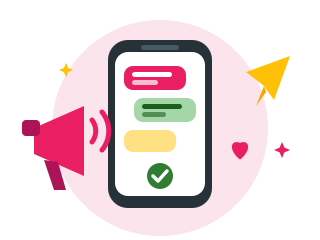
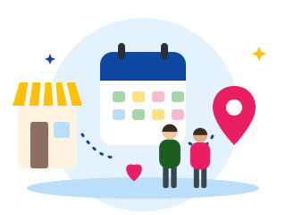

Pratinjau
Putar ulang splash
Lompat ke 3 sampul
garis bantu
07:58
CONNECT
Kuningan Barat · Jakarta Selatan
Lewati
Selamat datang di KUNBAR Connect
Untuk seluruh warga Kuningan Barat — dari anak muda, orang tua, RT/RW, UMKM, sampai pengurus kelurahan.

Sampaikan tanpa ribet
Kirim aspirasi, laporan masalah, sampai kondisi darurat keamanan. Semua tercatat dan bisa dilacak statusnya.

Terhubung & terbuka
Baca pengumuman RT/RW, lihat agenda, dukung UMKM warga, dan pesan fasilitas balai tanpa datang langsung.
Lanjut
memuat...